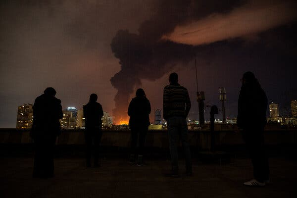
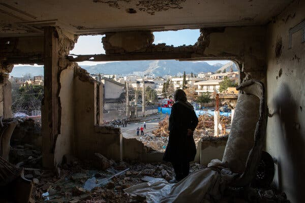
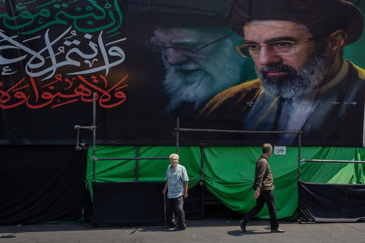
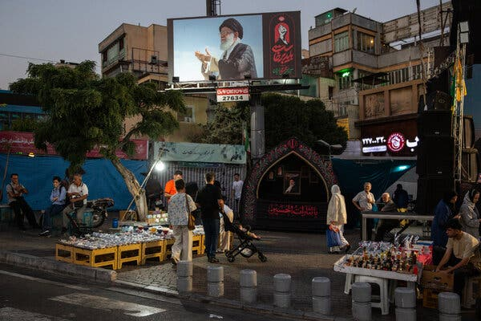
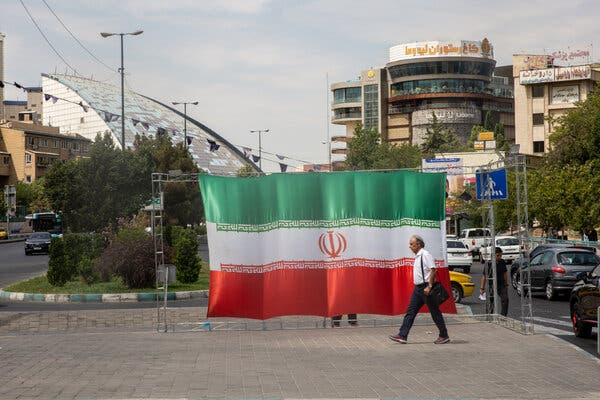

When the United States and Israel rained down missiles and bombs on Iran to start their war exactly six months ago today, there were some Iranians who, within a swirl of conflicting emotions, saw in the destruction something unexpected: hope.
"The one thing I'm certain about is that I wasn't sad," said Negar, a 35-year-old lawyer, describing feelings that were echoed by other Iranians interviewed via voice memos and text messages. "There was anxiety. There was worry. But there was no grief when the war began."
Six months later, the hope that Negar and other Iranians had that the war might presage a better future is largely gone, replaced with gnawing worries about the future, cynicism about the intentions of the United States and growing desperation from living in a failing economy.

The New York Times has regularly spoken with Iranians throughout the war, and not everyone was as hopeful as Negar and other critics of the government. Many Iranians support the system and have stood behind it, or opposed both the government and the idea that it could be swept away through military force.
But whether they initially welcomed the U.S.-Israeli military campaign or not, many Iranians say they no longer think that the government is set to crumble and are more focused on surviving an enduring economic crisis that the conflict has made much worse.
"I can't even begin to describe the level of anxiety we have about the future and what's going to happen," said Negar, who, like everyone else interviewed for this article, spoke on the condition that her last name not be used for fear of retribution from the government.
Fahimeh, 43, a former model living in Tehran, said hopelessness had taken over. "I'm not waiting for anything anymore," she said. "I've stopped trying to move forward and have switched to simply trying to survive."

For some Iranians, President Trump's erratic policymaking has been an inflection point. After the United States failed to achieve its stated goals, including preventing Iran from obtaining a nuclear weapon, changing the government and obliterating its missile program, Mr. Trump threatened to wipe out Iranian civilization, strike the country's infrastructure and send the country "back to the Stone Ages." U.S. and Israeli strikes also hit or damaged places that are important to civilians, including steel plants, petrochemical facilities, bridges and historic cultural sites.
Several Iranians said they now view the United States as fundamentally self-interested, but also incompetent and inconsistent.
"I didn't think they would put on such a show of contradictory and childish positions," said Mostafa, 38, a technology worker in Iran's northern Gilan Province, of Mr. Trump and his administration.
The United States is now betting that increased economic pressure will force the Iranian government to succumb by curbing its nuclear program or fully reopening the Strait of Hormuz, a key shipping route for Middle Eastern oil that it has effectively blockaded since the start of the war. American and Israeli pressure on Iran, including killing Ayatollah Ali Khamenei, the supreme leader, at the start of the war, has failed to force the country's leaders to back down. Instead, the government has been more resilient than its critics expected and become more authoritarian.
Many Iranians celebrated when Ayatollah Khamenei was killed, but he was replaced as supreme leader by his son, Mojtaba. The authorities have shown even less tolerance for dissent than before, executing dozens of political prisoners and going after critics.

"The Islamic Republic is convinced that it has defeated the world and that everyone is afraid of it," said Behzad, 44, a public relations executive in Tehran.
Ali, 42, an engineer in the northern Mazandaran Province, echoed this view. "At this point, I have much less hope that the Islamic Republic will fall," he said.
The most immediate preoccupation for most Iranians, however, is figuring out how to survive in an economy that was in free fall even before the Trump administration unveiled new restrictions this week.
The rate of inflation has soared to 84 percent, the central bank said this week. Food prices are rising every week, and even eggs are out of reach for a lot of middle- and working-class Iranians. Anxiety that the price of gasoline, which is heavily subsidized in Iran, may soon increase has led to long lines at gas stations as Iranians try to fill up.
The Iranian currency, the rial, has plunged in value and hit a record low of roughly two million to the dollar in recent days, causing prices of imported goods to surge.
"Everyone is scrambling to buy and stock up on food, especially Pakistani rice," said Marzieh, 44, a teacher in Bandar Abbas, a southern Iranian port city. The south of the country has been far more affected by the war than other areas, as the United States launched airstrikes this summer to try to dislodge Iran's control over the Strait of Hormuz.
Even staples, like chickpeas and beans, have become more expensive, Marzieh said, and she had given up on going to cafes and hosting people at home.
"What's frightening is that our salaries are already running out before the new month even begins," she said.

Given all the pressure, several Iranians said they expected a new round of protests to begin soon, despite the authorities' use of lethal force to crush nationwide demonstrations in January. Those protests began in late December after the value of the rial plunged, and the currency has sunk in value even further. Still, Iranian officials have tried to assure the public that they can manage the situation.
If the government reduced access to heavily subsidized fuel, that would put further stress on many Iranians. A 2019 increase in gasoline prices instigated huge demonstrations.
"You cannot stop an economic uprising with anything," said Esmaeil, 37, an artist in Tehran. "War won't stop it, and violence won't stop it."
For now, many are just trying to get through the increasingly difficult days.
Iranians, Esmaeil said, had fallen into a "black hole."
"People are hungry, confused and unable to find a way out," he said. "We are alone in a catastrophic situation of chaos and abandonment."

Shirin Hakim and Sanam Mahoozi contributed reporting.